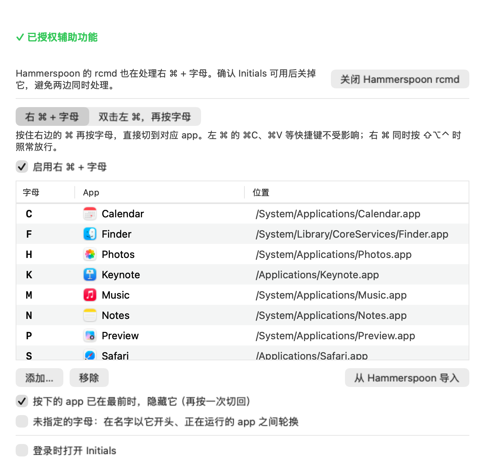
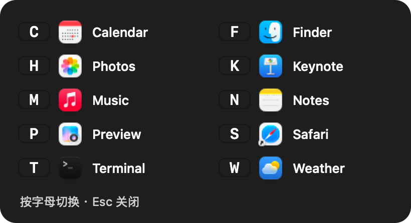

内存占用
活动监视器口径（物理内存），菜单栏常驻。
MAC 切换 APP · 原生 · 开源
给常用 app 各指定一个字母。右⌘+M 切到音乐，再按一次就隐藏。不用找 Dock，也不用在 ⌘Tab 里一个个翻。左边的 ⌘ 快速按两下，还会弹出字母面板，看一眼就知道按哪个。
v{{VERSION}} · {{SIZE}} MB · macOS 14 或更新 · Apple Silicon
Developer ID 签名，已通过 Apple 公证

活动监视器口径（物理内存），菜单栏常驻。
不轮询按键，只在你按键时由系统回调；实测空闲 1 分钟用 0.04 秒 CPU。
拦截回调里只做几次比较，切换动作放到之后执行。
纯 Swift + AppKit，没有内置浏览器或运行时。
两种用法
两边各有一张字母表，可以一样，也可以分开设。键盘右边的 ⌘ 平时几乎用不到，拿来切 app 正合适。
右⌘ 按住 + 字母
左⌘ 左⌘ → 字母
设置
点菜单栏的 ⌘ 图标 → 设置。键盘操作：⌘1/⌘2 切换左右两边，⌘N 添加，⌫ 移除，↩ 换 app，⌘W 关闭。


和同类工具比
下表根据各项目公开的说明整理；资源占用只列了 Initials 自己的实测。
| Initials | rcmd | OctoCmd | rcmd-lite | Thor | |
|---|---|---|---|---|---|
| 怎么切 | 右 ⌘ + 字母直达；双击左 ⌘ 弹面板 | 右 ⌘ + 字母 | 按右 ⌘ 弹面板，再按字母 | 右 ⌥ + 字母 | 每个 app 单独录一个组合键 |
| 没指定的字母 | 在同首字母的运行中 app 间轮换 | 按首字母 | 按首字母 | 临时分配给运行中的 app | — |
| 另外的功能 | 命令行；从 Hammerspoon 导入 | 见其官网 | 屏幕文字搜索、Vimium 式点击、滚动模式 | 提示面板 | — |
| 源码 | 开源 · MIT | 闭源 | 开源 · Apache-2.0 | 开源 | 开源 |
适合想要一个极轻、只管切 app 的工具的人。想要屏幕文字搜索、键盘点击这类更多功能，可以看 OctoCmd。
安装
需要 macOS 14 或更新，Apple Silicon（M 系列）。
打开下载的 DMG，把 Initials 拖到 Applications，然后从“应用程序”打开它。安装包已经过 Apple 公证，可以直接打开。
第一次打开会显示设置窗口。点 打开辅助功能设置…，在“系统设置 › 隐私与安全性 › 辅助功能”里打开 Initials 的开关。回到设置窗口，顶部变成 ✓ 已授权辅助功能，正在工作 就好了，不用重启。
为什么需要它：Initials 要接到右 ⌘ + 字母，并且不让这个按键再传给当前 app。它只看 ⌘ 和紧跟的字母，不记录、不保存你打的字。
点 添加… 选 app 并挑字母。已经在用 Hammerspoon rcmd 的，点 从 Hammerspoon 导入，确认好用之后再点 关闭 Hammerspoon rcmd，免得两边同时处理同一个键。
命令行
安装后命令在 /Applications/Initials.app/Contents/Resources/bin/initials，可以链接到自己的 PATH 里。改完即时生效。
initials list # 两边的字母表
initials set m Music # 右 ⌘ + M → 音乐（名字、bundle id 或 .app 路径都行）
initials set w WeChat --side left # 只给左 ⌘ 设（先 initials share off）
initials unset m
initials import # 导入 ~/.hammerspoon/keymaps.lua 的 right_command
initials status # 是否在运行、是否已授权、是否在拦截
initials disable left # 关掉双击左 ⌘退出码：0 成功，1 没找到，2 用法错误，3 Initials 没在运行（status）。配置文件：~/Library/Application Support/cyou.tianli.initials/config.json。
遇到问题
先看菜单栏的 ⌘ 图标：变灰说明还没授权或已暂停。打开设置，顶部如果提示需要授权，点“打开辅助功能设置…”打开开关。也可以在终端运行 initials status，看 intercepting 是不是 yes。
macOS 有时会让旧的授权失效。到“辅助功能”列表里把 Initials 关掉再打开；还不行就用“−”删掉，再重新添加。
两下之间和每一下的时长默认都是 0.3 秒以内。不需要这个功能，可以在设置里关掉“启用双击左 ⌘”，或者运行 initials disable left。
字母一样时，两边做的事一样，谁先收到都行。确认 Initials 好用后，在设置里点“关闭 Hammerspoon rcmd”，只留一个处理。以后想恢复，点同一个按钮。
Initials 按键盘上印的英文字母判断，和当前用什么输入法无关。
右 ⌘ 同时按 ⇧、⌥ 或 ⌃ 时不会被拦截。要完全停用右 ⌘ 这一边，运行 initials disable right。
免费、开源、不联网。
下载 v{{VERSION}}SHA-256：{{SHA256}}